DWH-laag int · Inmon, relationeel 3NF · bron: docs/informatiemodel/relationeel_model_integratielaag.md (git). Begrippen met een stippellijn tonen bij aanwijzen de definitie.

ERD in nieuw tabblad openen — zoomen met Ctrl + scroll. Bewerkbare bron: relationeel_model_integratielaag.md (Mermaid).
Volledige lijst, stand 02-08-2026.
Het model kent twee ankers: adres en gebied, verbonden via VBO_BUURT. Bronnen zonder adres of gebied (zoals Rechtspraak Open Data) worden niet geforceerd gekoppeld.
Elke tabel heeft twee standaardvelden: geladen_op (voorbeeld: 2026-08-02 03:15:04) en bron (voorbeeld: PDOK-BAG).
Presentatielaag: Kimball-sterren, zie ster_bag_status.md. Bronnenoverzicht: developer.overheid.nl. Wijzigen = commit op develop, mergen naar main.